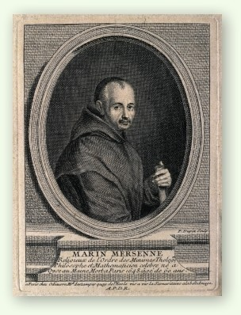
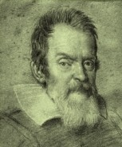
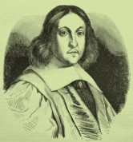
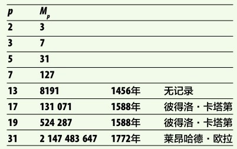
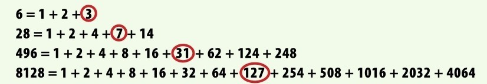

有一类素数能够通过一个简洁的公式用其他更小的素数表达出来，这些素数称为梅森素数。
把素数2平方再减1，我们得到一个更大的素数3：22-1=3。素数是只能被1和自己整除的正整数。如果上式把平方改成立方， 23-1=7，我们就能得到另一个更大的素数7。也许我们能够一直这样操作下去。那么，是不是所有素数之间都有这么简洁的关系呢？

梅森素数以17世纪法国修士马林·梅森的名字命名。
素数通用公式？
上段提到的公式：2p-1=另一个素数，是否适用于所有的素数呢？上面已经验证公式对素数2和3是成立的。那么下一个素数5呢？25-1=31。哇！31可真是素数呢！然后，27-1=127。127也是一个素数！所以，上述公式对5和7也是成立的。
素数子集
7之后下一个素数是11（读者可在第67页查看100以内的所有素数）。把11代入公式：211-1=2047。2047这个数看起来像素数，曾经人们也相信了很多年，直到1536年，德国数学家乌尔里希·里格证明了这个数是合数，有两个因子23和89。由此，上述公式并不能生成所有的素数。那么，有多少素数能够用这个公式生成呢？当时的数学家开始致力于解决这个问题。但是，证明一个自然数是素数并非易事。
Mp=2p−1
早期错判
1603年，意大利数学家彼得洛·卡塔第验证了17和19用上述公式可以生成素数，分别是131 071和524 287。不过，他错误地认为23、29、31和37同样也能通过上述公式生成新的素数。实际上，这4个数中只有31能够这样（虽然卡塔第在验证时还发生了计算错误）。人们容易把一个较大的合数当成素数。根据定义，要说明一个数是素数，需要验证所有小于这个数的素数均不是其因子。而卡塔第并没有掌握237以内的所有素数，毕竟这个数对当时的人来说太大。所以，他的验证是不完全的，进而出现了错判。
科学圈
马林·梅森经常与许多当时最伟大的数学家和科学家面对面或以通信的方式交流。他成为这些杰出人物思想交汇的桥梁，很多重要发明在梅森的交际圈中产生。在他逝世（1678年）后大约20年之际，第一批正规科研所建立，人们得以在此分享知识、交流想法。

伽利略
克里斯蒂安·惠更斯

皮埃尔·德·费马
布莱兹·帕斯卡
勒内·笛卡儿
数学苦行僧
17世纪中叶，一位生活在法国的修士马林·梅森迷上了这种用2p-1公式构造新素数的方法。梅森可谓世界上交友最广泛的数学家，他与欧洲许多杰出的智者有着频繁的联系，其中有几位还到他在巴黎的修道院拜访他。梅森对卡塔第的发现表示质疑，他认为31、67、127和257确实能通过上述公式得到新的素数，但是他没能算出这些素数具体为何（100年后莱昂哈德·欧拉才证明了231-1确为素数，而又过了100多年，爱德华·卢卡斯才验证2127-1所得的39位数是一个素数）。

注：此表列出了前几个梅森素数与它们的发现者。
虽败犹荣
梅森虽然并没有算出这些新产生的素数究竟是多少，但是鉴于他对素数相关理论的传播所做出的贡献，人们还是以他的名字命名了这些素数。若一个素数是某个素数p通过公式2p-1计算得到的，则称这个素数为梅森素数，记作Mp。（若这个公式2p-1算出的是一个合数，则称之为梅森数。）梅森素数一直受到人们的关注的原因有两个：第一，它们是由已知的素数计算得到的，便于考查；第二，梅森素数公式为我们发现另一类神奇数字提供了可能。
GIMPS
互联网梅森素数大搜索，简称为GIMPS，是数学界最大的公共项目之一。确定一个自然数为素数需要大量艰巨的计算，而GIMPS项目使得任何一位数学爱好者可以下载素数筛选程序软件到个人计算机中，以寻找新的梅森素数。计算机启动后，该软件将在后台运行，并把计算结果回馈给主机。自1996年开始，迄今已有150000位成员、超过100万台计算机参与这一国际合作项目。到目前为止，已发现的49个梅森素数中有15个是通过GIMPS项目找到的。
完全数
其实在公元前4世纪，欧几里得已经开始关注梅森素数。他发现如果2p-1是一个素数，则2p-1（2p-1）是一个完全数。完全数是一类奇特的自然数，它的所有真因数之和恰为这个数。大多数自然数是亏数（译者注：在数论中，若一个正整数除了本身之外所有因子之和比此数自身小，则称此数为亏数，也称缺数），即真因数之和要小于这个数。比如10的真因数有1、2和5，它们之和等于8，严格小于10。部分自然数是盈数，即真因数之和要大于这个数。比如12的真因数有1、2、3、4和6，它们之和等于16。而能够做到两者恰好相等的完全数其实很少。最小的完全数是6，如上图所示，6的真因数有1、2和3，它们之和正好为6。目前已算出的完全数共有49个，而且每个与一个梅森素数相对应，以这个素数为真因数。我们连完全数是不是都是偶数还没有弄清楚——尽管已知的49个完全数都是偶数，但我们知道完全数有无穷多个。这是因为素数有无穷多个，所以，梅森素数也该有无穷多个，进而对应的完全数也有无穷多个（见第160页：集合论）。

如图，这些完全数的真因数之和恰好等于这个数，而且每个完全数对应一个梅森素数，并以之为真因数。
最大的梅森素数
第49个梅森素数是2016年发现的。用科学记数法，这个数表示为274207281-1，有22338618个数字。这个数不光是目前最大的梅森素数，亦是迄今为止找到的最大的素数。有了这个素数，人们可以去算最大的完全数，已算得其有44677235个数字。
Mp=274 207 281−1
寻求新的梅森素数
确定一个自然数是素数意味着大量艰巨的计算，过去几十年计算机计算能力的飞速提高促使新的梅森素数以前所未有的速度被发掘。自联合全球所有有志之士的GIMPS项目启动之后（见第178页方框），已知的梅森素数中近1/3在这个项目中被新发现。最近一次的突破性工作发生在2016年，人们找到了目前最大的梅森素数，亦是迄今已知的最大素数（见左侧的方框）。不久前，人们还发现小于第44个梅森素数的所有自然数中，不再可能有新的梅森素数，但是在第45个和第49个梅森素数之间可能还有新的梅森素数。
参见：
▶素数，第58页
▶乘方，第76页
▶无穷大，第152页